Firmware that turns the monome Teletype into Orca Seaflake: the grid, song mode, patches, MIDI through the Disting EX, triggers and CV out of the Teletype and the ER-301. Plus the Mac app Orca Seaflake TT: emulator, flasher and help in one.
Built on Teletype 5 (monome/teletype, commit e390bac). Version 0.2, 23 November 2026.
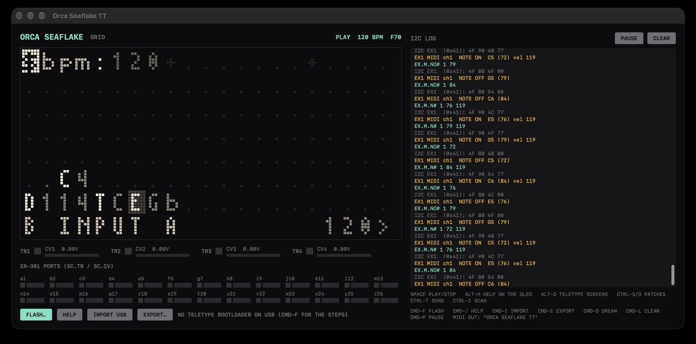
: % ! ? ( ) @), the trigger and CV operators (- _ ' " / \ [ ] { }), N (>n: octave, note, velocity to the Disting EX's voices), and the other > functions and <, which reach every Disting EX and ER-301 function. The Disting EX is found on the I²C bus by itself.Orca Seaflake is the module's only runtime. There are no Teletype screens to fall into: esc only closes Orca's own pickers and views. Teletype scripts still run from $script:N and F1–F10, and a USB stick still gets the WRITE / READ menu.
A first patch: the Teletype plays an arpeggio over MIDI through your Disting EX.
$bpm:120 ..C4.... D1.4TCEGb .:04.f2.
D1 bangs every frame. C4 counts 0–3, T picks C, E, G or b (C one octave up) from that count, and : plays it on MIDI channel 1, octave 4, velocity f, 2 frames long. On the bus this becomes EX.M.N# 1 72 119. This is example patch P01 in the emulator.
Where the bang goes. D, U, F and the other clocks write their bang (*) into the cell directly below them, and a bang triggers the operators touching it. So put the operator you want to fire on the next row, one cell to the right, with the bang beside it. A D directly above an operator writes its * over that operator and erases it (Orca does the same).
D4 right: D bangs the cell below it; the * lands beside the > .>n4C D4 wrong: the * lands ON the > and erases it, nothing is sent >n4C
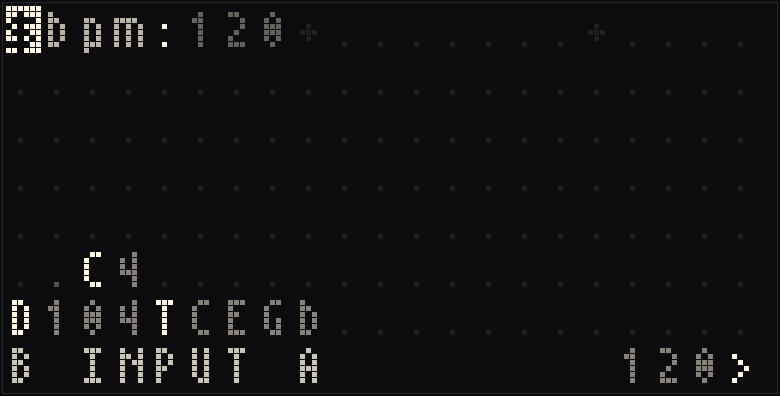
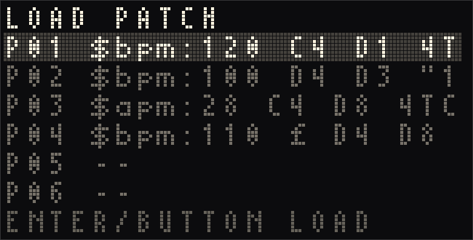
The grid is 80 × 40 cells. The OLED shows 21 × 7 at a time and scrolls to follow the cursor. Brightness tells you what each cell is:
c never looks like C (the Teletype's own font makes them nearly the same)T is reading (it walks along the sequence as the key changes), the cell O reads, the slot P writes, and the cells Q reads* on a grey block: a bang+ every 8 cells: emptyThe bottom line says what the cell under the cursor is. On an operator it names the operator (DELAY, MIDI, DISTING NOTE ON). On a cell that an operator reads or writes, it names that inlet or outlet, so a letter inside an operator's operands is never mistaken for an operator:
| Cursor on | Bottom line |
|---|---|
the 4 of D4 | D MODULO |
the 3 of :03C | : OCTAVE |
the n of >n4C | EX N (the function letter) |
the N of >n4N | EX NOTE (not NORTH) |
the 0 of <p05 | ER PORT HI |
| a cell nothing uses | the patch (P07* = changed since saving) and the cursor position |
On the right are the BPM and > (playing; it blinks on the beat), S (a song is playing) or | (stopped). ERR + a reason means the last > or < could not be sent (for example ERR UNIT 1-4).
| Key | Where | Does |
|---|---|---|
space | grid | play / stop (the module and the emulator start playing by themselves) |
arrows | grid | move the cursor; the screen scrolls over the 80 x 40 grid |
alt + arrows | grid | leap 8 cells |
shift + arrows | grid | select a block |
page up / page down / home / end | grid | a screen up / down, to the left / right edge |
any character | grid | write it at the cursor; a letter alone is lowercase, with shift uppercase (as in Orca) |
caps lock | grid | swaps that: letters alone come out uppercase (a small A by the tempo shows it) |
enter | grid | insert mode on / off (the cursor moves right after each character) |
backspace / delete | grid | erase the cell or the selection |
ctrl + c / x / v | grid | copy / cut / paste a block (up to 1024 cells) |
ctrl + z | grid | undo the last change (again = redo) |
ctrl + a | grid | select the whole grid |
ctrl + f | grid | step one frame while stopped |
ctrl + r | grid | frame counter back to 0 |
ctrl + n | grid | new, empty grid (undo brings it back) |
alt + [ / ] | grid | BPM -1 / +1 |
ctrl + [ / ] | grid | BPM -10 / +10 |
ctrl + s | grid | SAVE PATCH: pick one of 32 slots with the arrows, enter (enter again to overwrite) |
ctrl + o | grid | LOAD PATCH: pick a slot, enter; the clock keeps running, ctrl + z brings the old grid back |
ctrl + t | grid | song mode (the song view) |
ctrl + i | grid | I2C: the Disting EX at 0x41 (algorithm, preset), the ER-301 at 0x31, the bus (pull-ups) and the message count; enter looks again |
alt + h | grid | help on the OLED: keys, every operator and selector |
alt + d | grid | start the screensaver now (any key, the knob or the front button wakes it) |
esc | grid | close a picker, the song view, the scan or help; clear a selection. Esc never leaves Orca Seaflake (alt + esc, tab, F11, F12 and alt + F1-F10 do nothing) |
front button | module | LOAD PATCH: the picker opens; turn PARAM (or use the arrows) to pick a slot, press the button again to load it; esc closes |
PARAM knob | module | picks the slot while LOAD PATCH is open; always the Teletype PARAM value for scripts |
F1-F8 / F9 / F10 | grid | run Teletype script 1-8 / metro / init of the scene loaded at power-on (as $script:N); ctrl + F1-F8 mute a script's trigger input, ctrl + F9 metro on / off |
up / down, left / right | song view | choose the slot / the field (PAT, LEN, MUL, BPM) |
0-9 | song view | type a number into the field (commits when you move) |
+ / - (or ] / [) | song view | field up / down |
enter | song view | this slot plays the patch on the grid (save the patch first) |
backspace | song view | clear the slot |
l | song view | load the slot's patch and tempo onto the grid |
space | song view | play / stop the song |
m / r | song view | mode ORD -> REV -> RND / loop on - off |
ctrl + s / ctrl + o | song view | save / load the song (8 song slots) |
ctrl + n | song view | new, empty song |
ctrl + t / esc | song view | back to the grid (the song keeps playing) |
WRITE TO USB | USB stick in the Teletype | writes the 32 scenes plus SFSCAN.TXT (the scan) and SFPATCH.TXT (all patches and songs) to the stick |
READ FROM USB | USB stick in the Teletype | reads the scenes back, and the patches and songs from SFPATCH.TXT if the stick has one |
cmd + F | emulator | the Flash window: ports check, flashing, restore to stock |
cmd + I | emulator | import SFSCAN.TXT + SFPATCH.TXT from a USB stick in /Volumes (the module's scan, patches and songs) |
cmd + E | emulator | export SFSCAN.TXT + SFPATCH.TXT to a folder or USB stick (READ FROM USB on the module loads them) |
cmd + / | emulator | this help: keys, operators, flashing |
cmd + D | emulator | start the screensaver now (any key wakes it) |
cmd + L | emulator | clear the I2C log |
cmd + P | emulator | pause / resume the I2C log |
cmd + Q | emulator | quit (the patches and songs are already saved in ~/Library/Application Support/Orca Seaflake Teletype) |
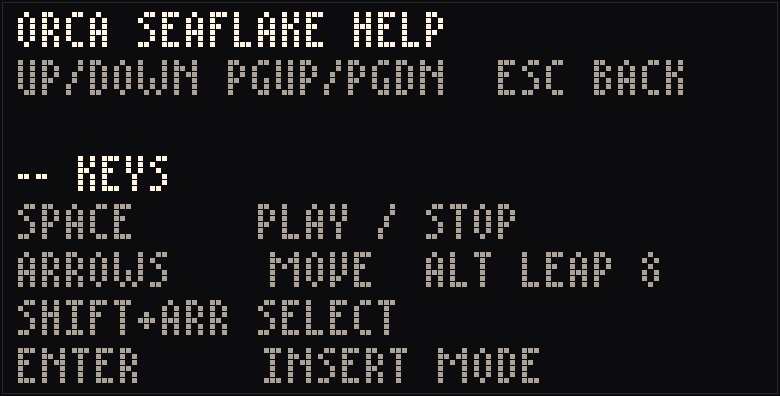
After 5 minutes without a key, the screen dreams: each time, one of four dreams from femishonuga.com, picked at random and never the same one twice in a row.
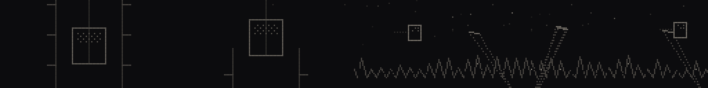
The elevator into the night, one of the four.
All four are drawn as sparse line art: outlines and dotted lines only, no filled areas, never more than 32 lit pixels in a row (drawn in full shades, an earlier dream glitched the module's screen), and the firmware sends the screen controller its whole setup again before every frame. Each drifts and changes from pass to pass, so nothing stays lit in one place. It keeps dreaming until you come back: any key, the knob or the front button wakes it and the grid is redrawn, and the grid keeps playing the whole time. alt+d starts one at once (press it again after waking for another).
All the classic operators work exactly as in Orca Seaflake, including its defaults: a lone D bangs every 8 frames, a lone C counts 0–7, a lone I counts up by 1, and a lone U plays 1 of 8. Uppercase operators run every frame. Lowercase ones run only when a * touches them. Values are base 36: 0–9, then a–z = 10–35.
This is checked by a test that runs the same patches through the original Seaflake JavaScript engine and through this C port, frame by frame. All patches give identical grids for 600 frames, including your own orcaDronePulse1, orcaforMWM23rd and the other example patches. The note letters give the same MIDI note numbers for every letter and octave (468 combinations).
| Op | Name | Inputs → output |
|---|---|---|
A | add | left + right, below |
B | subtract | |right − left|, below |
C | clock | left rate (min 1), right modulo (default 8); frame / rate mod modulo, below |
D | delay | left rate, right modulo (default 8); bangs below every rate × modulo frames |
E N S W | move | move east / north / south / west one cell a frame; bang when blocked |
F | if | bangs below when left and right are the same glyph |
G | generator | left 3 = x, left 2 = y, left 1 = length; copies the cells on its right to x, y+1 |
H | halt | stops the operator below from running |
I | increment | left step (default 1), right modulo; adds to the value below |
J / Y | jumpers | copy the glyph above to below / left to right |
K | konkat | left = count; reads that many variables named on its right, writes their values below |
L | lesser | smaller of left and right, below |
M | multiply | left × right, below |
O | read | left 2 = x, left 1 = y; the cell at that offset, below |
P | push | left 2 = key, left 1 = length, right = value; writes into a row below |
Q | query | left 3 = x, left 2 = y, left 1 = length; copies cells to below |
R | random | left min, right max (default 36); random value below |
T | track | left 2 = key, left 1 = length; picks one of the cells on its right |
U | uclid | left steps (default 1), right length (default 8); Euclidean bangs below |
V | variable | left = name to write, right = value (or the name to read); output below when reading |
X | write | left 2 = x, left 1 = y, right = value; writes it at x, y+1 |
Z | lerp | left rate (default 1), right target; moves the value below toward it |
* | bang | triggers the operators touching it, then disappears |
# | comment | stops the rest of the row (up to the next #) |
A * you type yourself disappears in the same frame, before the operator to its right sees it (Orca does the same). Bangs come from operators such as D, U, F and &, which write a * below themselves.
| Op | Name | Operands → result |
|---|---|---|
^ | probability | right = chance (default i = 18/35); passes a bang below at random |
& | phase clock | left rate (default 1), right length (default 4), above = step (default 0); bangs on that step |
~ | burst | right: repeats (default 4), division, multiplication; when banged, plays that many bangs one frame × div / mul apart, in real time |
| | mute block | left 2 width (default 8), left 1 height (default 4); each bang hashes the block out with # or brings it back |
+ | scale | left = variable name (default 0), right 12 cells = 1/0 for C, C#, … B (default C major) |
The MIDI operators : % ! ? ( ) @ are in section 5 and their trigger/CV alternatives in section 6. $ is in section 9. > (Disting EX) and < (ER-301) are new, in sections 7 and 8.
; (UDP) and = (OSC) work as in Seaflake: they read and lock their message so the grid behaves the same. The Teletype has no network, so they send nothing. Your patches that talk to Pilot with ; load and run safely. They just don't reach Pilot.
Every Seaflake MIDI operator sends its MIDI through the Disting EX's MIDI output. Inside, they run Teletype's own EX.M.* ops, so the I²C bytes are exactly the ones those ops send when you type them in a script. The MIDI goes to Disting EX unit 1, or to the unit chosen with >u (for example >u2 sends everything after it to unit 2).
| Op | Operands (cells to the right) | Sends |
|---|---|---|
: note | channel 0–f, octave 0–8, note, velocity (default f), length in frames (default 1) | EX.M.N# ch+1 note vel … EX.M.NO# ch+1 note when the length is up |
% mono | same as :; a new note on the channel cuts the old one | same as : |
! CC | channel, controller (0–z), value 0–z (scaled to 0–127) | EX.M.CC# ch+1 cc value |
? pitch bend | channel, LSB 0–z, MSB 0–z (each scaled to 0–127) | EX.M.CH ch+1, EX.M.PB, then your EX.M.CH is put back (EX.M.PB has no channel form) |
( just note | channel (default 0), octave (default 4), note, velocity, length | a pitch bend to the just-intonation ratio, the note, then the bend is reset |
) scale note | channel, octave, degree (1-based), scale variable (from +), velocity, length | EX.M.N# for that degree of the scale |
@ shaped | channel, octave, note, velocity, shape 1–4, repeats, duration in frames, pulse width | a run of EX.M.N#/EX.M.NO# spaced by the shape, in real time |
0–f = MIDI channel 1–16 (Teletype numbers MIDI channels from 1).H = A, J = C an octave up). Octave 4 C is MIDI note 72.0–g (0–16) → MIDI 0–127.: and % need the channel, octave and note filled in, or nothing is sent (the original Orca behaviour).Three plain output operators, one per job. Every pulse is $pulse long (20 ms unless changed; chapter 9), so none of them has a length, velocity or slew inlet:
| Glyph | Inlets | Sends |
|---|---|---|
- trigger | output | one pulse. No CV is touched. -2 pulses TR 2; -a pulses ER-301 port 1 |
_ trigger + CV | output, octave (empty = 4), note | the pitch CV (1 V/octave), then one pulse. _14C = 4 V on CV 1 + a pulse on TR 1 |
' CV | output, slew (in pulses), level 0–z | a CV level only, no trigger |
} shaped trigger is @ with everything but the trigger taken out: output (default 1), shape 1–4, repeats, duration in frames, pulse width (the spread of shape 4, as in @). It fires the same run of pulses at exactly the times @ would play its notes, with no CV, octave, note, velocity or channel. }214a: 4 pulses on TR 2 spread over 10 frames, bunched at the start (shape 1).
` loadbang bangs the cell below it once, on the first frame after a patch is loaded: at power-on, ctrl+o, $patch:N, or a song moving to the patch. At power-on it waits until the Disting EX has answered on the bus (up to 30 s), so what it bangs arrives. Put the Disting EX's preset load under it and the preset loads whenever this patch does:
`....... .>l05... at power-on / load: Disting EX preset 5 (EX.PRESET 5)
Every MIDI operator also has a twin that plays the note as CV + a trigger pulse on an output. The first operand, which is the channel on the MIDI ops, becomes the output:
| Output glyph | Goes to | Sent with |
|---|---|---|
1–4 | Teletype TR 1–4 (trigger) and CV 1–4 (pitch) | the Teletype's own jacks |
a–z | ER-301 ports 1–26 (a = 1) | SC.TR.TIME + SC.TR.P for the trigger, SC.CV + SC.CV.SLEW for pitch |
The trigger pulse is 20 ms by default. Change it with $pulse:N (1–250 ms, section 9). The length operand of the trigger ops counts in pulses, so 1 = 20 ms and 3 = 60 ms. Velocity 0 sets the CV without a trigger.
Pitch to CV: 1 V per octave, and the Orca octave number is the voltage. 0C = 0 V, 3C = 3 V, 4C = 4 V, 4E = 4.33 V, up to 10 V. The CV changes before the trigger fires, so the module sees the new pitch on the trigger.
| MIDI op | Twin | Operands | Does |
|---|---|---|---|
: | " trig note | output, octave, note, velocity, length in pulses (default 1 = 20 ms) | pitch CV + a pulse |
% | / gate note | output, octave, note, velocity, length in frames | pitch CV + a gate held high for that many frames (an empty length acts like ") |
! | ' CV level | output, slew (in pulses: 1 = 20 ms), level 0–z = 0–10 V | sets a CV level only (for modulation); the trigger is not fired |
? | \ CV bend | output, LSB, MSB (as ?) | bends that output's pitch CV by up to ±2 semitones; CV only, no trigger |
( | [ just trig | output (default 1), octave (default 4), note, velocity, length in pulses | pitch CV tuned to the just-intonation ratio + a pulse |
) | ] scale trig | output, octave, degree, scale variable, velocity, length in pulses | pitch CV for that scale degree + a pulse |
@ | { shaped trig | output, octave, note, velocity, shape, repeats, duration, pulse width | the same shaped run as @, as pulses |
D4......D3..... .-1......_a3E... a pulse on TR 1; ER-301 port 1 to 3.33 V + a pulse D4......D3..... ."14C...."a3E... TR1/CV1 at 4 V, and ER-301 port 1 at 3.33 V ............... D2..Rz......... .'30........... random CV on output 3 (R writes the level)
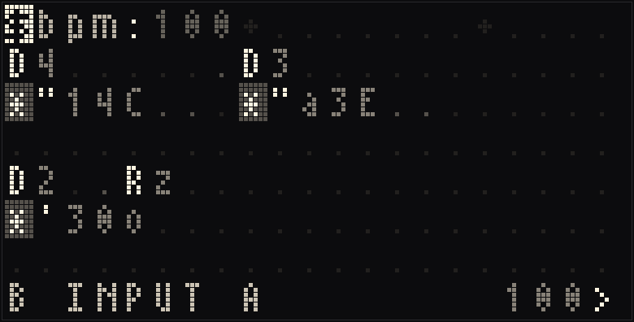
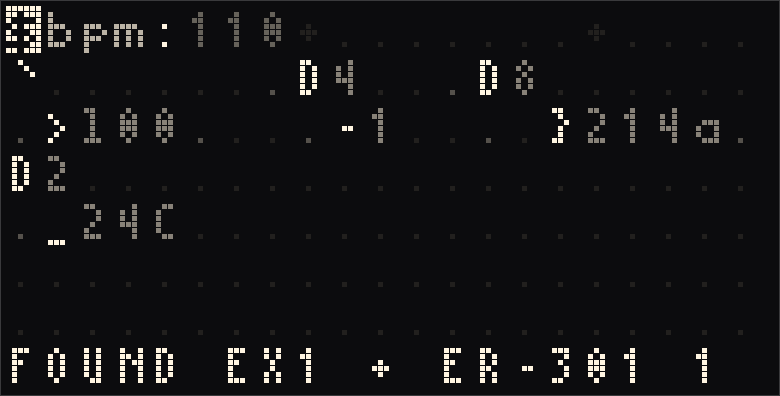
` loadbang over >l00, -1, }214a and _24C> functionsNothing to set up. The addresses are fixed: the Disting EX is always at 65 (0x41) and the ER-301 at 0x31. At power-on (and with ctrl+i) the module asks the Disting EX for its algorithm and preset. If it is still starting, it asks again (every half second for 10 seconds, then every 2 seconds, for up to 2 minutes: an ER-301 and a Disting EX in a cold case can take that long); the grid plays meanwhile. Everything is sent to 0x41 either way.
Every Disting EX operator is > followed by one letter, read together as one operator: >n is N, >p is the parameter operator. The cells after the letter are its inlets. It acts when banged. Cells are drawn grey like the inlets of :, the bottom line names each one, and other operators can write into them (also into the letter, to switch functions).
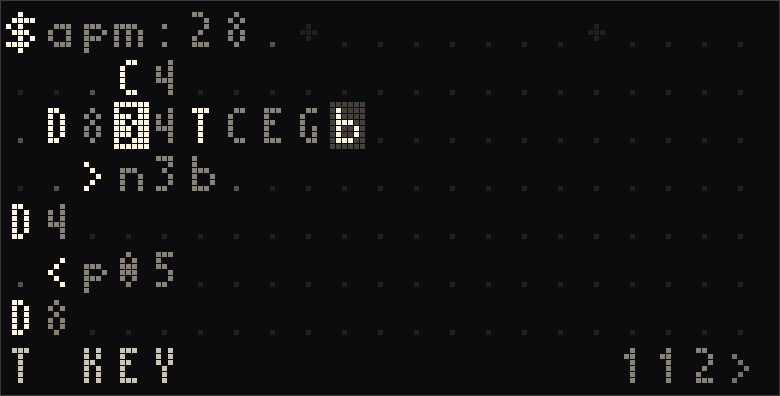
T feeds the note of N (>n3), <p05 pulses ER-301 port 5, >p01 reads parameter 1| Operator | Inlets | Sends |
|---|---|---|
>n (or >N) N | octave (empty = 4), note, velocity (empty = f) | a note on the Disting EX's voices (EX.NOTE), off again one frame later (EX.NOTE.O) |
>@ N@ | octave, note, velocity, shape 1–4, repeats, duration, pulse width | N with everything @ has except the channel: a shaped run of notes at exactly @'s times, each off half a frame later |
D4...... .>n4C. bang: C4 on the Disting EX (EX.NOTE 3277 15360) D8...... .>@4Cf141 bang: 4 notes of C4 within a frame, shape 1
Notes and velocity are converted to the Disting EX's own units: pitch 1 V/octave with 0 V = MIDI note 48, as the Disting expects, so >n4C plays the same note (72) as :04C does over MIDI; velocity 0–g becomes 0–16384. The bytes are exactly what EX.NOTE N 24 15360 sends from a Teletype script.
>p or >vBoth set one Disting EX parameter. The parameter number is two cells (a wide number: 0d = parameter 13). They differ in how you give the new value:
>p exact value | >v level | |
|---|---|---|
| The value is | the number the Disting shows, two cells: 1e = 50, 2s = 100 | a position in the parameter's range, one cell: 0 = minimum, i ≈ half, z = maximum |
| You need the range? | yes | no: the Disting scales it onto its own min..max |
| Negative values | no | yes (anything in the range) |
| Reading back | leave the value empty: the value is read and written below the > | — |
| Good for | a precise setting | sweeps and modulation |
D4 .>p0d1e parameter 13 to 50 (EX.P 13 50) D4 .>v0di parameter 13 to about halfway (EX.PV 13 8426) D4...R .>v0d. R writes a random level into >v's level cell: parameter 13 jumps around its range
Base 36 for the two-cell numbers: first cell × 36 + second cell, with a–z = 10–35. If 0d moves the parameter next to the one you meant, the Disting's list counts from the other end: use 0c or 0e. The last cell of either is the side for dual algorithms (empty = single, 1 left, 2 right).
> functionsEvery function puts the value first and the dual-algorithm side last; with a single algorithm leave the side empty. Operand types:
| Type | Cells | Meaning |
|---|---|---|
| n | 1 | a number 0–35 (0–9, a–z) |
| W | 2 | a wide number, two base-36 digits: 01 = 1, 0c = 12, 3c = 120, up to zz = 1295 |
| N | 2 | a note: octave cell + note letter, as in : (4C, 3g = G#3); empty octave = 4 |
| vel | 1 | velocity 0–g, empty = f |
| lvl | 1 | a level 0–z, scaled to the function's full range |
| side | 1 | dual algorithms: empty or 0 = single algorithm, 1 = left, 2 = right |
| act | 1 | an action letter |
| Op | Inlets | Does (Teletype op) |
|---|---|---|
>p | W W side | parameter to an exact value, like EX.P (EX.PARAM / P1 / P2); value empty = read it |
>v | W lvl side | parameter to a level 0–z across its min..max (EX.PV / PV1 / PV2) |
>i / >j | W side | read the parameter's minimum / maximum (EX.MIN… / EX.MAX…) |
>l | W side | load a preset (EX.PRESET / PRE1 / PRE2); empty = read the current one |
>s | W side | save as preset (EX.SAVE / SAVE1 / SAVE2) |
>r | — | reset the preset (EX.RESET) |
>a | n side n | algorithm (EX.ALG / A1 / A2); side 3 = both dual algorithms (EX.A12); empty = read it |
>c | n lvl | I²C controller n to a level (EX.CTRL) |
>z | knob lvl | Z knob 1 or 2 to a level (EX.Z1 / Z2); level empty = give it back (EX.ZO1 / ZO2) |
>k | n | the note channel N and >o use (EX.CH; 1 until changed), for multi-timbral algorithms |
>d | n N vel | note on for one channel (EX.N#; empty channel = EX.NOTE) |
>o | n N | note off (EX.NOTE.O / EX.NO#) |
>x | — | all notes off (EX.ALLOFF) |
>w | n N vel | play voice n (EX.VOX); velocity 0 = voice off (EX.VOX.O) |
>f | n N | set voice n's pitch only (EX.VOX.P) |
>t | n vel | trigger voice n, for SD Triggers (EX.TV); velocity empty = medium (EX.T) |
>e / >y | n | WAV recorder record / play, 1 = start, 0 = stop (EX.REC / EX.PLAY) |
>g / >h | N / — | Augustus Loop pitch (EX.AL.P) / clock (EX.AL.CLK) |
>q | act n | looper n: r record, p play, c clear, v reverse, d octave down; read: s state, i reversed?, j down? (EX.LP.*) |
>m | act W W | MIDI out: p program, c clock, s start, t stop, o continue, h channel, n note on, f note off, e CC, w bend (EX.M.*), on the EX.M.CH channel |
>b | act W W | Select Bus: n note on, f note off, e CC, w bend, p program, c clock, s start, t stop, o continue, h channel (EX.SB.*) |
>u | n | pin Disting EX unit 1–4 (EX). Only for racks with several Disting EX units: with one, the scan finds it |
D4...... .>p030a bang: parameter 3 to the value 10 (EX.P 3 10 → bytes 46 03 00 0A) D4...... .>v03z. bang: parameter 3 to its maximum (EX.PV 3 16384) D8...... .>qr1.. bang: looper 1 record on/off (EX.LP.REC 1)
>l / >a / >p with nothing to set, >i, >j, >q s/i/j) write the answer below the > as one base-36 glyph, clamped to 0–35, so it can feed other operators.>v, the level across its range.ERR and a reason in the status line and sends nothing.EX.M.N#, NO# and CC# are sent by : % !.Two ways to have a Disting EX preset load by itself, both optional (nothing is sent if neither is set):
` (loadbang) above >l and a preset number. It loads whenever that patch loads, and at power-on once the Disting EX answers.EX.PRESET n once at power-on, as soon as the Disting EX answers (it keeps looking for 2 minutes). If no Disting EX answers, it sends nothing.>k2 moves it to channel 2, or use >d with a channel cell.PULLUPS OK). Leave the Disting EX's own pull-ups off unless that line says NO PULLUPS and the bus doesn't work (chapter 15).< — the ER-301 operator< does the same for the ER-301 (the Teletype SC.* ops). The first operand of every selector is the port, a wide number: 01 = port 1 … 2s = 100 on the first ER-301; ports 101–200 and 201–300 are the second and third.
| Sel | Operands | Does (Teletype op) |
|---|---|---|
p | port | pulse the trigger (SC.TR.PULSE) |
t | port n | set the trigger to 0 / 1 (SC.TR) |
g | port | toggle the trigger (SC.TR.TOG) |
l | port n | trigger polarity (SC.TR.POL) |
m | port W | pulse length in ms (SC.TR.TIME); 0k = 20 ms |
c | port lvl | CV level, 0–z = 0–10 V (SC.CV) |
n | port N | CV pitch from a note, 1 V/oct like the trigger ops: 4C = 4 V (SC.CV) |
s | port lvl | CV level now, without slew (SC.CV.SET) |
o | port lvl | CV offset (SC.CV.OFF) |
w | port W | CV slew in ms (SC.CV.SLEW) |
D4....... .<p05.... pulse port 5 → bytes 05 04 to the ER-301 at 0x31 D8....... .<n024C.. port 2 to the note 4C = 4 V (an operator can write the note letter) D8....... .<c03z... port 3 to 10 V → bytes 10 02 3F FF
Each operator needs its own bang: a D only bangs the row right under it.
For simple melodies on the ER-301 you rarely need <. The trigger/CV operators of section 6 with an output letter ("a4C = port 1) already send SC.TR.P and SC.CV for you.
, — Just FriendsBeta: the Just Friends support is tested in the emulator (every function's bytes match the stock Teletype JF.* op) but not yet on a real Just Friends.
, plays and sets up Mannequins Just Friends over I²C (address 0x70; a second one at 0x75), the same way > does the Disting EX: , then a function letter, then fixed operand cells. Every function runs the stock Teletype JF.* op, so the bytes are the ones a Teletype script would send. Is it connected? ctrl+i shows JUST FRIENDS 70 FOUND when it answered (the power-on scan asks it, enter asks again). --: check the I²C cable (GND to GND) and its power. If it is FOUND but a note does nothing, put it in synthesis mode (,m1, or JF.MODE 1) and turn up its outputs; the bottom line shows I2C 70 NACK if a message was refused.
4C = 0 V, 4G = 7 semitones up, 3C a volt (an octave) down, 5C an octave up.0–g = 0–8 V in half-volt steps; empty = a = 5 V.1–6 one voice, 0 all six, 7–c voices 1–6 of the second Just Friends; empty = 1.| Sel | Operands | Does (Teletype op) |
|---|---|---|
n | N vel | a note on the next free voice (JF.NOTE); no note off, its envelope ends it |
@ | N vel shape rep dur pw | JF.NOTE as @'s shaped run, in real time |
p | N vel | 12-voice note over two Just Friends (JF.POLY); x resets its count (JF.POLY.RESET) |
v | ch N vel | one voice at a pitch (JF.VOX) |
f | ch N | a voice's pitch only (JF.PITCH) |
r | ch vel | trigger with velocity (JF.VTR) |
t | ch state | trigger input to 1 / 0 (JF.TR); state empty = a pulse: 1, then 0 one $pulse later |
s | N | transpose everything (JF.SHIFT), 4C = none |
u | lvl | RUN voltage (JF.RUN): 0 = −5 V, i = 0 V, z ≈ +5 V |
o / m / d | 1 / 0 | RUN mode (JF.RMODE) / synthesis mode (JF.MODE) / A = 432 Hz (JF.GOD) |
j | ch num den | a voice's just ratio (JF.TUNE): ,j132 = voice 1 at 3/2 |
q | n | quantize to a clock division, 0 = off (JF.QT) |
k | W | Geode clock: 1–48 beats per measure, 49–255 BPM (JF.TICK) |
a / e | 1 / 2 | set the Just Friends' address (JF.ADDR) / talk to JF 1 or 2 (JF.SEL) |
g | letter | read (firmware 4), answer below: s speed 0/1, t mode 0/1/2, knobs r c f i o (ramp curve fm time intone) as 0–z |
`........ .,m1..... on load: synthesis mode (JF.MODE 1) D4....... .,n4Ca... every 4 frames: C at 5 V → bytes 09 00 00 20 00 to 0x70 ..C4..... D1.4TCEGA T picks C E G A in turn and writes it below... .,n4.a... ...into the note cell: an arpeggio on Just Friends D8....... .,@4G8141 a run of four Gs, shape 1
Orca drives it like any operator: T, R, V or Z can write the note or velocity cells, so melodies and dynamics come from the grid. Shaped runs (,@) are timed in real time, as @.
$ commands and tempo$ runs the command written on its right when it is banged, as in Seaflake. $bpm:N and $apm:N also work without a bang: written anywhere on the grid, they set the tempo as soon as the patch runs, like Seaflake's grid tempo directive. A song slot that loads the patch picks it up too.
| Command | Does |
|---|---|
$bpm:120 | tempo in BPM, 60–300 (4 frames per beat) |
$apm:30 | tempo in frames per minute ÷ 4, as Seaflake: apm × 4 = bpm (30 → 120 BPM), 15–75 |
$play / $stop | start / stop the clock |
$frame:N, $skip:N, $rewind:N | set / move the frame counter |
$pulse:N | trigger pulse length in ms for all trigger operators (1–250, default 20) |
$script:N / $s:N | run Teletype script N (1–8, 9 = metro, 10 = init) |
$patch:N / $p:N | load patch slot N onto the grid (for chaining patches) |
Seaflake treats only $bpm: as a grid directive. $apm: also runs as a normal $ operator that locks its cells, so patches made in Seaflake behave exactly the same here. The tempo directive is an addition you asked for. It can be changed by any operator that writes into the digits.
ctrl+s opens SAVE PATCH: choose one of 32 slots with the arrows (each shows the start of what is in it) and press enter. Saving over a different patch asks for enter again. ctrl+o opens LOAD PATCH. Loading keeps the clock and frame count running, so you can switch patches live, and ctrl+z brings back the grid you had.
PATCH TOO BIG and is not saved.$bpm in the grid still wins). A patch without a saved tempo keeps the current tempo.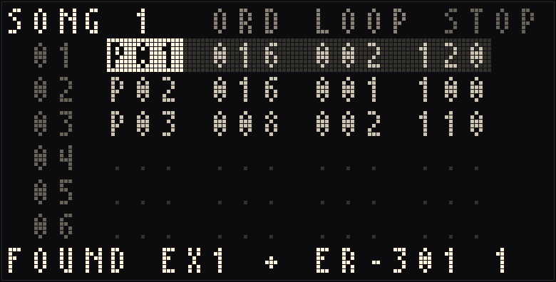
As in Seaflake, a song is a list of 32 slots, each playing a patch for LEN × MUL frames at its own BPM. A $bpm or $apm in the patch overrides the slot's tempo while it plays. Modes are ORD (in order), REV (reverse) and RND (shuffled each pass), with LOOP or ONCE. On the Teletype a slot points to a patch slot (P01–P32), so save your patches first.
| Key (song view) | Does |
|---|---|
| ↑ ↓ / ← → | choose slot / field (PAT, LEN, MUL, BPM) |
| 0–9 | type a number into the field (commits when you move) |
| + - (or ] [) | field up / down |
| enter | this slot plays the patch on the grid (save it first) |
| backspace | clear the slot |
| l | load the slot's patch and tempo onto the grid |
| space | play / stop the song |
| m / r | mode ORD → REV → RND / loop on/off |
| ctrl+s / ctrl+o | save / load the song (8 song slots) |
| ctrl+n | new, empty song |
| ctrl+t / esc | back to the grid (the song keeps playing) |
At power-on the song view holds the song that is playing (see above), or else song 1. While a song plays, the grid shows S in the status line and > marks the playing slot.
/Applications/Orca Seaflake TT.app runs the same C code as the firmware: the Seaflake engine, its screen and help, and the Teletype ops that send to the Disting EX and ER-301. The OLED is drawn pixel for pixel at 6×. Only the hardware is simulated. The same app flashes the module (cmd+F, chapter 13) and holds this manual's tables (cmd+/).
EX.M.N# 1 72 119), grey is the exact bytes put on the bus with the address (I2C EX1 (0x41): 4F 90 48 77), and amber is what the Disting EX will play (MIDI ch1 NOTE ON C5 (72) vel 119). PAUSE / CLEAR, or cmd+P / cmd+L.~/Library/Application Support/Orca Seaflake Teletype/seaflake.bin, next to tt00s.txt–tt31s.txt (Teletype scenes, in the format of the Teletype's USB backups).SFSCAN.TXT + SFPATCH.TXT to a folder or USB stick, the same files the module writes with WRITE TO USB; READ FROM USB on the module loads the patches and songs from them. cmd+I imports them from a stick in /Volumes (shift+cmd+I from any folder): the emulator then has the same Disting EX unit and ER-301 as your rack, and your patches and songs appear in its slots.>p and <, tempo by $apm:28), P04 (loadbang, -, _ and }) and song 1 (P01 → P02 → P03). Examples are only written into an empty slot store; an existing seaflake.bin keeps your patches.EX.ALG and EX.PRESET answer; other reading operators (>p01) read 0. The device scan, the startup preset and the loadbang run the module's own code against these pretend devices; the settings in the Flash window (pulse, startup preset) apply to the emulator at once. There are no trigger inputs, IN knob, grid or USB stick.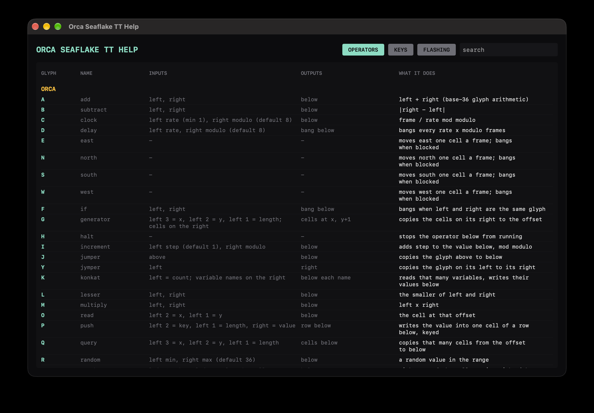
Orca Seaflake replaces the Teletype firmware. Flashing erases the whole chip: scenes, Orca patches and calibration. The bootloader itself can't be erased, so a failed flash is never fatal: put the module back in its bootloader and try again.
In the app (Orca Seaflake TT, in /Applications) press cmd+F: the Flash window. It has three steps.
Everything else (the pulse length, the module read-back, the firmware's size and SHA-256, the raw log) is under DETAILS, closed by default. "Restore stock Teletype..." is the way back (below).
From Terminal (what the app runs):
cd ~/Downloads # the folder with orca-seaflake-teletype.hex (in this repository: dist/) dfu-programmer at32uc3b0512 erase dfu-programmer at32uc3b0512 flash orca-seaflake-teletype.hex --suppress-bootloader-mem dfu-programmer at32uc3b0512 start
cd ~/Downloads dfu-programmer at32uc3b0512 erase dfu-programmer at32uc3b0512 flash teletype.hex --suppress-bootloader-mem dfu-programmer at32uc3b0512 start
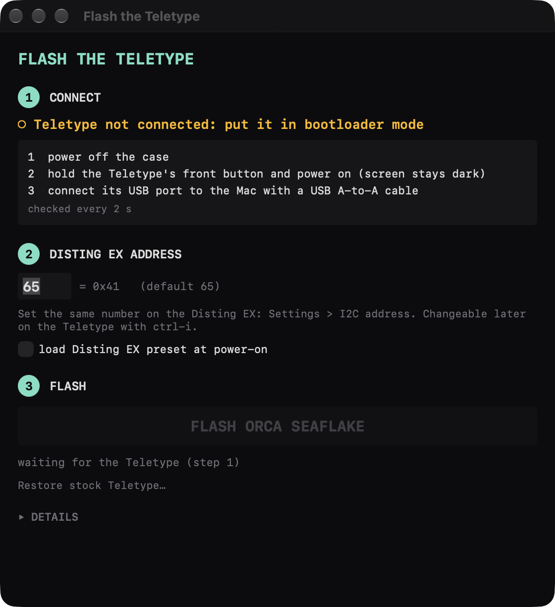
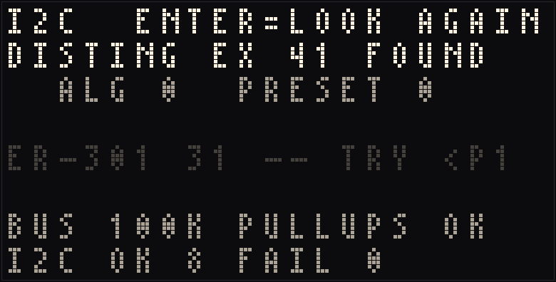
At every power-on, and with ctrl+i (enter looks again), the module asks the Disting EX at its fixed address, 65 (0x41), for its algorithm and preset. The bottom line says what it found (FOUND DISTING EX, or FOUND EX + JF with a Just Friends). Just Friends at 0x70 is asked with one byte and nothing read back; ctrl+i shows JUST FRIENDS 70 FOUND or --, and every , message updates it. After power-on it keeps asking for 2 minutes until the Disting EX answers.
The ER-301 is not asked. The stock Teletype only ever writes to an ER-301, and an ER-301 that is asked to answer a read can leave the bus stuck. So the ER-301 line says -- TRY <P1 until the first < or a–z message to it is acknowledged; then it says FOUND. Messages to the ER-301 go to 0x31 either way.
The addresses are part of the firmware: Disting EX 65 (0x41), ER-301 0x31. There is nothing to set on the Teletype or in the Flash window; on the Disting EX, Settings > I²C address = 65. The MIDI operators, N and every > function go to 0x41; the a–z outputs and < go to 0x31.
The scan can see which modules are there, plus the Disting EX's algorithm and preset. It can't see which SC.TR / SC.CV units you have in your ER-301 patch, because the ER-301 doesn't report that over I²C.
| Line | Means |
|---|---|
BUS 100K PULLUPS OK | the bus runs at 100 kHz and something on it pulls SDA and SCL up: the wiring is electrically right |
NO PULLUPS / NO SDA PULLUP / NO SCL PULLUP | at power-on nothing else pulled that line up; the Teletype's own weak pull-ups are carrying it. Fine for a short bus; if messages fail, switch on a module's or the busboard's pull-ups |
SDA HELD LOW / SCL HELD LOW | something holds the line down: a reversed cable, or a module stuck mid-message |
SDA FREED | a module was stuck holding SDA at power-on; the Teletype clocked it free |
I2C OK 12 FAIL 0 | messages the operators sent since power-on, and how many were not acknowledged |
OK 0 FAIL 9 NACK 6A | the last failure: NACK = the device refused it, BUSY = it timed out (the bus restarts itself and the message is sent once more), then the command byte (6A note off, 68 pitch, 69 velocity, 46 EX.P, 47 EX.PV, 4F MIDI) |
While the grid plays, a message that fails also shows for 2 seconds on the grid's bottom line: I2C 41 NACK CMD 6A.
I2C OK 0 FAIL 0 after a while of playing means nothing was sent: check that the bang lands beside the operator (chapter 1).The Teletype only talks to the Mac while it is in its bootloader, so the scan travels on a USB stick. Put a stick in the Teletype: the USB menu appears; turn PARAM to WRITE TO USB and press the front button. The module goes back to the grid when it is done. Next to the scenes it writes SFSCAN.TXT (the scan) and SFPATCH.TXT (every patch as grid text, and every song). Put the stick in the Mac and press cmd+I in the app. It takes on the same Disting EX unit and ER-301 number, and your patches and songs appear in its slots. The other way round, cmd+E writes the two files to the stick and READ FROM USB on the module stores the patches and songs in its slots (after the scenes). The module also keeps its last scan in flash, where the Flash window reads it back over USB for the ports check (chapter 13).
ORCA SEAFLAKE I2C SCAN (SFSCAN.TXT) EX1 FOUND ALG 5 PRESET 12 EX2 NONE ... ER301 1 FOUND USING EX 1 ER301 1
Every operator the firmware implements, by group: the glyph, its inputs (the cells it reads), its outputs, and what it does. The app's help (cmd+/) shows the same table, from the same file (docs/manual/ops.tsv), and the build checks it against the module's own help (alt+h). >x means > with the selector x.
| Glyph | Name | Inputs | Outputs | What it does |
|---|---|---|---|---|
A | add | left, right | below | left + right (base-36 glyph arithmetic) |
B | subtract | left, right | below | |right - left| |
C | clock | left rate (min 1), right modulo (default 8) | below | frame / rate mod modulo |
D | delay | left rate, right modulo (default 8) | bang below | bangs every rate x modulo frames |
E | east | - | - | moves east one cell a frame; bangs when blocked |
N | north | - | - | moves north one cell a frame; bangs when blocked |
S | south | - | - | moves south one cell a frame; bangs when blocked |
W | west | - | - | moves west one cell a frame; bangs when blocked |
F | if | left, right | bang below | bangs when left and right are the same glyph |
G | generator | left 3 = x, left 2 = y, left 1 = length; cells on the right | cells at x, y+1 | copies the cells on its right to the offset |
H | halt | - | - | stops the operator below from running |
I | increment | left step (default 1), right modulo | below | adds step to the value below, mod modulo |
J | jumper | above | below | copies the glyph above to below |
Y | jymper | left | right | copies the glyph on its left to its right |
K | konkat | left = count; variable names on the right | below each name | reads that many variables, writes their values below |
L | lesser | left, right | below | the smaller of left and right |
M | multiply | left, right | below | left x right |
O | read | left 2 = x, left 1 = y | below | the cell at that offset |
P | push | left 2 = key, left 1 = length, right = value | row below | writes the value into one cell of a row below, keyed |
Q | query | left 3 = x, left 2 = y, left 1 = length | cells below | copies that many cells from the offset to below |
R | random | left min, right max (default 36) | below | a random value in the range |
T | track | left 2 = key, left 1 = length; cells on the right | below | picks one of the cells on its right (the picked cell is lit) |
U | uclid | left steps (default 1), right length (default 8) | bang below | Euclidean rhythm bangs |
V | variable | left = name to write, right = value (or name to read) | below when reading | writes or reads a variable |
X | write | left 2 = x, left 1 = y, right = value | cell at x, y+1 | writes the value at the offset |
Z | lerp | left rate (default 1), right target | below | moves the value below toward the target |
* | bang | - | the operators touching it | a one-frame bang, then disappears |
# | comment | - | - | stops the rest of the row (up to the next #) |
a-z | passive | - | - | a lowercase operator only runs when banged (as in Orca) |
| Glyph | Name | Inputs | Outputs | What it does |
|---|---|---|---|---|
^ | probability | right = chance (default i = 18/35) | bang below | passes a bang below at random |
& | phase clock | left rate (default 1), right length (default 4), above = step (default 0) | bang below | bangs on that step of the cycle |
~ | burst | right: repeats (default 4), division, multiplication | bangs below | when banged, plays that many bangs one frame x div / mul apart, in real time |
| | mute block | left 2 width (default 8), left 1 height (default 4) | the block below | each bang hashes the block out with # or brings it back |
+ | scale | left = variable name (default 0), right 12 cells = 1 / 0 for C C# D ... B (default C major) | the variable | defines a scale for ) and ] |
; | udp | cells on the right | - | Seaflake's UDP message (Pilot): kept so patches load, sends nothing on the module |
= | osc | cells on the right | - | Seaflake's OSC message: kept so patches load, sends nothing on the module |
| Glyph | Name | Inputs | Outputs | What it does |
|---|---|---|---|---|
: | note | channel 0-f, octave 0-8, note, velocity (default f), length in frames (default 1) | EX.M.N# ... EX.M.NO# | note on through the Disting EX's MIDI out; note off when the length is up |
% | mono note | same as : | EX.M.N# / EX.M.NO# | a new note on the channel cuts the old one |
! | CC | channel, controller 0-z, value 0-z (scaled to 0-127) | EX.M.CC# | control change |
? | pitch bend | channel, LSB 0-z, MSB 0-z (each scaled to 0-127) | EX.M.CH + EX.M.PB | pitch bend (the EX.M.CH channel is put back after) |
( | just note | channel (default 0), octave (default 4), note, velocity, length | EX.M.PB + EX.M.N# | a bend to the just-intonation ratio, the note, then the bend is reset |
) | scale note | channel, octave, degree (1-based), scale variable (from +), velocity, length | EX.M.N# | the note at that degree of the scale |
@ | shaped note | channel, octave, note, velocity, shape 1-4, repeats, duration in frames, pulse width | EX.M.N# / EX.M.NO# run | a run of notes spaced by the shape, in real time |
| Glyph | Name | Inputs | Outputs | What it does |
|---|---|---|---|---|
" | trig note | output 1-4 / a-z, octave, note, velocity, length in pulses (default 1 = 20 ms) | TR + CV (TT jacks) or SC.TR.P + SC.CV (ER-301) | pitch CV at 1 V/octave + a pulse |
/ | gate note | output, octave, note, velocity, length in frames | TR + CV / SC.TR + SC.CV | pitch CV + a gate held high for that many frames |
' | CV level | output, slew in pulses, level 0-z = 0-10 V | CV / SC.CV.SLEW + SC.CV | sets a CV level only (for modulation); the trigger is not fired |
\ | CV bend | output, LSB, MSB (as ?) | CV / SC.CV | bends that output's pitch CV by up to +-2 semitones; CV only, no trigger |
[ | just trig | output (default 1), octave (default 4), note, velocity, length in pulses | TR + CV / SC.TR.P + SC.CV | pitch CV tuned to the just-intonation ratio + a pulse |
] | scale trig | output, octave, degree, scale variable, velocity, length in pulses | TR + CV / SC.TR.P + SC.CV | pitch CV for that scale degree + a pulse |
{ | shaped trig | output, octave, note, velocity, shape, repeats, duration, pulse width | TR + CV / SC.TR.P + SC.CV | the same shaped run as @, as pulses |
- | trigger | output 1-4 / a-z | TR (TT jacks) or SC.TR.TIME + SC.TR.PULSE (ER-301) | trigger only: one pulse, $pulse ms long; no CV, no other inlets. Bang it from beside: D4 then .-1 on the next row |
_ | trigger + CV | output, octave (default 4), note | TR + CV / SC.TR.PULSE + SC.CV | pitch CV at 1 V/octave + one pulse ($pulse ms); only the inlets needed (no velocity, length or slew) |
} | shaped trigger | output (default 1), shape 1-4, repeats, duration in frames, pulse width (shape 4 spacing) | TR / SC.TR.PULSE | @'s run of steps (same timing, repeats and division) as pulses only: no CV, octave, note, velocity or channel; each pulse $pulse ms |
` | loadbang | - | bang below | bangs once on the first frame after a patch loads (power-on, ctrl+o, $patch:N, a song changing patch); at power-on it waits until the Disting EX has answered (up to 30 s). Put a Disting operator on the next row one cell right, where the bang lands beside it: ` then .>l05 |
| Glyph | Name | Inputs | Outputs | What it does |
|---|---|---|---|---|
> | disting ex | a function letter, then its operand cells (the >x rows) | I2C to the Disting EX the scan found (EX.* ops) | one Disting EX function when banged; >x is one operator: > then the letter. No unit or channel cells: the Disting EX is found by the I2C scan. Readers write their answer below |
>n | N (note) | octave (default 4), note, velocity (default f) | EX.NOTE, then EX.NOTE.O one frame later | plays a note on the Disting EX's voices: octave, note and velocity only (typed >N or >n) |
>@ | N@ (note with @) | octave, note, velocity, shape 1-4, repeats, duration, pulse width | EX.NOTE / EX.NOTE.O run | N with everything @ has except the channel: a shaped run of notes at @'s exact times |
>p | parameter (EX.P) | param W, value W, side | below when reading | parameter to an exact value, as EX.P (EX.PARAM / P1 / P2); value empty = read it |
>v | parameter level (EX.PV) | param W, lvl, side | - | parameter to a level 0-z across its min..max, as EX.PV (PV1 / PV2) |
>i | parameter min | param W, side | below | read the parameter's minimum (EX.MIN...) |
>j | parameter max | param W, side | below | read the parameter's maximum (EX.MAX...) |
>l | load preset | preset W, side | below when reading | load a preset (EX.PRESET / PRE1 / PRE2); preset empty = read the current one |
>s | save preset | preset W, side | - | save as preset (EX.SAVE / SAVE1 / SAVE2) |
>r | reset | - | - | reset the preset (EX.RESET) |
>a | algorithm | n, side, n (side 3: both) | below when reading | algorithm (EX.ALG / A1 / A2 / A12); empty = read it |
>z | z knob | knob 1 / 2, lvl | - | Z knob to a level (EX.Z1 / Z2); level empty = give the knob back (EX.ZO1 / ZO2) |
>c | controller | n, lvl | - | I2C controller n to a level (EX.CTRL) |
>k | note channel | n | - | the channel N and >o use (EX.CH; 1 until changed) |
>d | note on, channel | n, N, vel | - | note on for one channel (EX.N#; empty channel = EX.NOTE) |
>o | note off | n, N | - | note off (EX.NOTE.O / EX.NO#) |
>x | all notes off | - | - | EX.ALLOFF |
>w | voice | n, N, vel | - | play voice n (EX.VOX); velocity 0 = voice off (EX.VOX.O) |
>f | voice pitch | n, N | - | set voice n's pitch only (EX.VOX.P) |
>t | trigger voice | n, vel | - | trigger voice n, for SD Triggers (EX.TV / EX.T) |
>e | record | n (1 / 0) | - | WAV recorder record start / stop (EX.REC) |
>y | play | n (1 / 0) | - | WAV recorder play start / stop (EX.PLAY) |
>g | augustus pitch | N | - | Augustus Loop pitch (EX.AL.P) |
>h | augustus clock | - | - | Augustus Loop clock (EX.AL.CLK) |
>q | looper | act, n | below for s / i / j | looper n: r record, p play, c clear, v reverse, d octave down; s state, i reversed?, j down? (EX.LP.*) |
>m | midi out | act, W, W | - | MIDI out: p program, c clock, s start, t stop, o continue, h channel, n note on, f note off, e CC, w bend (EX.M.*) |
>b | select bus | act, W, W | - | Select Bus: n note on, f note off, e CC, w bend, p program, c clock, s start, t stop, o continue, h channel (EX.SB.*) |
| Glyph | Name | Inputs | Outputs | What it does |
|---|---|---|---|---|
< | er-301 | selector cell, then port (W) and operands (see the < selectors) | I2C to the ER-301 (SC.* ops) | runs one ER-301 function when banged |
<p | pulse | port | SC.TR.PULSE | pulse the trigger |
<t | trigger | port, n | SC.TR | set the trigger to 0 / 1 |
<g | toggle | port | SC.TR.TOG | toggle the trigger |
<l | polarity | port, n | SC.TR.POL | trigger polarity |
<m | pulse ms | port, W | SC.TR.TIME | pulse length in ms (0k = 20 ms) |
<c | cv level | port, lvl | SC.CV | CV level, 0-z = 0-10 V |
<n | cv note | port, N | SC.CV | CV pitch from a note, 1 V/octave (4C = 4 V) |
<s | cv set | port, lvl | SC.CV.SET | CV level now, without slew |
<o | cv offset | port, lvl | SC.CV.OFF | CV offset |
<w | cv slew | port, W | SC.CV.SLEW | CV slew in ms |
| Glyph | Name | Inputs | Outputs | What it does |
|---|---|---|---|---|
, | just friends | a function letter, then its operand cells (the ,x rows) | I2C to Just Friends at 0x70 (JF.* ops) | one Just Friends function when banged, as Teletype's JF.* op. Notes: octave 4 C = 0 V = Just Friends' own pitch (octave 3 a volt down). Velocity 0-g = 0-8 V, empty = a = 5 V. Channel 1-6, 0 = all six, 7-c = the second Just Friends, empty = 1 |
,n | note | octave (default 4), note, velocity (default a) | JF.NOTE | a note on the next free voice (Just Friends in synthesis mode, ,m1); no note off: its envelope ends the note |
,@ | note with @ | octave, note, velocity, shape 1-4, repeats, duration, pulse width | JF.NOTE run | JF.NOTE as @'s shaped run of notes, in real time |
,p | poly note | octave, note, velocity | JF.POLY | a note across two Just Friends (12 voices, JF.POLY); ,x starts the count again (JF.POLY.RESET) |
,v | voice | channel, octave, note, velocity | JF.VOX | play one voice at a pitch |
,f | voice pitch | channel, octave, note | JF.PITCH | set one voice's pitch without playing it |
,r | velocity trigger | channel, velocity | JF.VTR | trigger a voice at a velocity |
,t | trigger | channel, state (empty = a pulse) | JF.TR | the voice's trigger input to 1 / 0; state empty = 1, then 0 one $pulse later (a trigger) |
,s | shift | octave, note (4C = 0) | JF.SHIFT | transpose the whole instrument |
,u | run | level 0-z (i = 0 V, 0 = -5 V) | JF.RUN | the RUN voltage |
,o | run mode | 1 / 0 | JF.RMODE | RUN mode on / off |
,m | synthesis mode | 1 / 0 | JF.MODE | synthesis mode on (needed for ,n ,p ,v) / off |
,d | god mode | 1 / 0 | JF.GOD | tuning: A = 432 Hz on / off |
,j | tune | channel, numerator, denominator | JF.TUNE | a voice's just-intonation ratio (e.g. ,j132 = 3/2) |
,q | quantize | divisions 0-w (0 = off) | JF.QT | quantize note timing to a division of the clock (Geode) |
,k | tick | W: 1-48 = beats per measure, 49-255 = BPM | JF.TICK | clock Just Friends' Geode mode |
,a | address | 1 / 2 | JF.ADDR | set the Just Friends' own address (1 = 0x70, 2 = 0x75) |
,e | select | 1 / 2 | JF.SEL | which Just Friends the other , functions talk to |
,x | poly reset | - | JF.POLY.RESET | start JF.POLY's voice count again |
,g | read | a letter: s speed, t mode, r ramp, c curve, f fm, i time, o intone | below | read a setting (Just Friends firmware 4): s 0 shape / 1 sound, t 0 transient / 1 sustain / 2 cycle; knobs as 0-z (0-10 V) |
| Glyph | Name | Inputs | Outputs | What it does |
|---|---|---|---|---|
$ | command | the text on its right | - | runs a command when banged; $bpm: and $apm: also work without a bang |
$bpm:N | tempo | 60-300 | - | tempo in BPM (4 frames per beat) |
$apm:N | tempo (apm) | 15-75 | - | apm x 4 = bpm, as in Seaflake |
$play | play | - | - | start the clock |
$stop | stop | - | - | stop the clock |
$frame:N | frame | N | - | set the frame counter ($skip:N / $rewind:N move it) |
$pulse:N | pulse | 1-250 | - | trigger pulse length in ms for all trigger operators (default from the ports config, 20) |
$script:N | script | 1-8, 9 = metro, 10 = init | - | run Teletype script N ($s:N) |
$patch:N | patch | 1-32 | - | load patch slot N onto the grid ($p:N), for chaining patches |
| Glyph | Name | Inputs | Outputs | What it does |
|---|---|---|---|---|
TR/CV ops | teletype scripting | - | - | TR.*, CV.*, M, PN, etc. run inside Teletype scripts ($script:N or F1-F10), never as grid operators; there are no Teletype script screens |
These have been checked in the emulator and tests. They still need a run on your actual modules:
D4, then on the next row one cell right :04C (so the : is beside D's bang), press space. The Disting EX in a MIDI-receiving algorithm, or a synth on its MIDI out, plays C on channel 1.: to " with output 1 ("14C): TR 1 pulses 20 ms and CV 1 reads 4.00 V on a meter. "14E → 4.33 V."a4C: ER-301 port 1 (an SC.TR / SC.CV unit) gets the pulse and the CV.>v03z next to a bang moves parameter 3 of the Disting EX's algorithm to max; >p030a sets it to 10 (check the Disting's display). >qr1 toggles looper record. <p01 pulses ER-301 port 1.D4, then .>n4C on the next row (one cell right) plays C4 (checked on the module, 20 Nov 2026); >@4Cf141 plays a quick run of four. With ` above >l05 saved in a patch, power-cycle: preset 5 is loaded.-1 pulses TR 1 only (CV 1 does not move); _14E sets CV 1 to 4.33 V and pulses TR 1; }1141 gives four pulses on TR 1 within a frame (pulses closer than $pulse merge).$bpm:90 on the grid sets 90 BPM. $pulse:50 lengthens the pulses.>n4C: the bottom line reads EX N, EX OCTAVE, EX NOTE, EX VELOCITY.teletype/ folder of github.com/femifleming/orca_seaflake, a clone of monome/teletype. New files: src/seaflake/ (engine sf_core.c, Disting EX / ER-301 bridge sf_ii.c), module/seaflake_mode.c (screen + keys), module/seaflake_help.c (help), module/sf_flash.c + module/seaflake.lds (storage), src/seaflake/sf_config.c (the ports block), emu/ (the app: App.swift, Flash.swift over tt_emu.c), docs/manual/ (this manual, make.py, and the tables the app's help is made from: ops.tsv, keys.tsv, flashing.txt), tests/seaflake/. module/sf_ui.c (which screen shows, and where keys, the front button and the knob go; shared with the emulator). Changed: module/main.c, module/globals.h, module/usb_disk_mode.c (reads SFPATCH.TXT back, returns to the grid), and the Makefiles. How the stock firmware works underneath, and what was found while reworking it: docs/reverse-engineering.md.module/dreams/, picked by module/dream.c); they share one 3 KB primitive list. The older train dream (module/dreams/train.c) is not in the set.cd module && make inside the dewb/monome-build Docker image (dist/orca-seaflake-teletype.hex + its .sha256). App: cd emu && make install. Manual + README tables: python3 docs/manual/make.py. Tests: cd emu && make test (212 end-to-end checks, including every example layout in this manual and the module's help: MIDI and I²C bytes against the stock ops, every >/< function, all 96 EX/SC ops reachable, triggers, CV, gates, $pulse, shaped runs, tempo, patches, songs, timing, inlet names, the I²C scan with devices present / absent / late / a dead bus, the startup preset, loadbang, esc in every state, the front button, the USB report round trip, the ports block, the Disting EX address) and tests/seaflake/compare.sh (JS vs C engine).~) and 6 shaped runs (@ / { / } / >@) at a time. Trigger pulses closer together than $pulse merge into one. Values read back by > are clamped to 0–35. Trigger/CV outputs are 1–4 and a–z.; messages (your Pilot commands) have nowhere to go on the Teletype. Pilot Sealflake on the Mac still gets them from Orca Seaflake on the Mac.